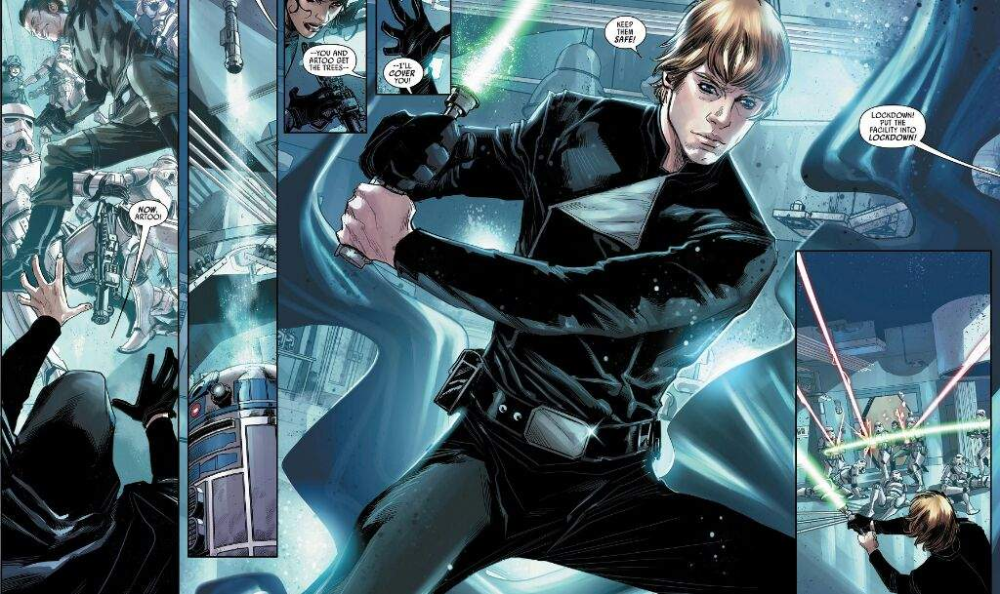

About Luke Skywalker
Luke Skywalker was a Tatooine farmboy who rose from humble beginnings to become one of the greatest Jedi the galaxy has ever known. Along with his friends Princess Leia and Han Solo,
Luke Skywalker fighting with his Lightsaber
Luke's Characteristics
- He was the greates a Jedi
- His master was Yoda
- He saved the galaxy
Luke's Friends
Luke has some awesome and brave friends as well as a sister. Click on the links below to read more about them